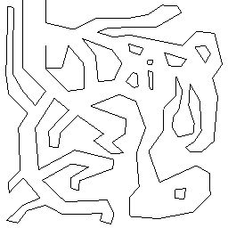
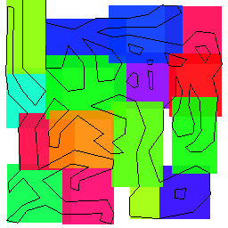
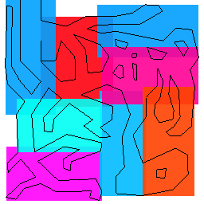
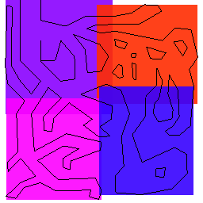
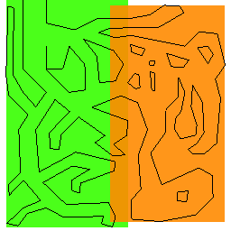
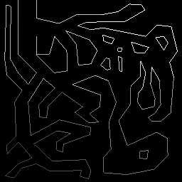

Input
Input

[4x4]
[4x4]

[2x4] / [4x2]
[2x4] / [4x2]

[2x2]
[2x2]

[1x2] / [2x1]
[1x2] / [2x1]
### Memory We can also determine the amount of memory required up front. Lets say we have grid size of 8x8 and had a node per cell: ``` 8x8 + 4x8 + 4x4 + 2x4 + 2x2 + 1x2 + 1x1 = 64 + 32 + 16 + 8 + 4 + 2 + 1 = 127 = 2 * gridSize * gridSize - 1 ``` Except our bottom level nodes always come in pairs of two, so the actual amount of nodes is half, leaving us instead with: ``` 4x8 + 4x4 + 2x4 + 2x2 + 1x2 + 1x1 = 32 + 16 + 8 + 4 + 2 + 1 = 63 = gridSize * gridSize - 1 ``` We can proove this via the Geometric Series:
You may have noticed the power of two sequence we have going on:
Alternatively, for every 4 cells (2x2), there will be 3 nodes:
Pednantic math aside, when you take into account the number of lines: ``` const uint bvhFloat4Size = 3; uint numFloat4s = (gridSize * gridSize - 1) * bvhFloat4Size + numLines ; ``` ### Tiny Bucket Problem One problem we may encounter is that we end up with a lot of tiny buckets, which cause needless overhead when traversing. Ideally we would "merge" line buckets when they are smaller than some threshold (say 16). Iterating buckets by their Morton Encoding order, means we can easily merge 4 nodes together, but additionally memory is spatially stored close by, increasing the likelihood of hitting a cache.

Example BVH Gen Shader
```c #version 460 core #extension GL_EXT_control_flow_attributes : require /* level count : grid dims 1 : 2x2 2 : 4x4 3 : 8x8 4 : 16x16 */ #ifndef NUM_LEVELS #define NUM_LEVELS 3 #endif // NUM_LEVELS #define GRID_SIZE_DIM (1<The ray traversal is largely the same as previous stuff I've done (a stack based method), as such I'm not going to get into it here. ## Demo As always, here's a demo, this one allows you to edit the lines, which is all handled on the GPU side (picking a vertex and updating the lines buffer). First time using WebGPU, the API is sort of like a Vulkan-lite, or a primitive RHI abstraction (which I guess is what it kind of is) and is quite nice compared to WebGL (although still has teething issues).
Global Controls
Resolution
BVH Levels
Scene
Editing Controls
Edit Lines
Snapping
Visualisation Controls
Vis Type
BVH Start
BVH End